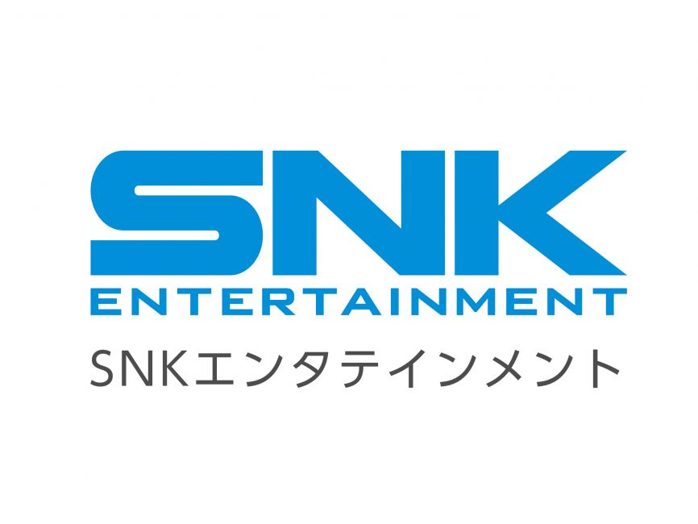
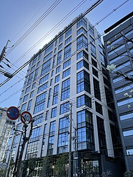
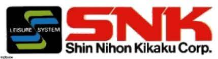
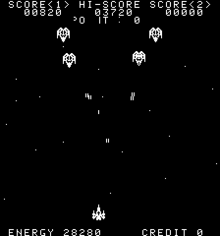
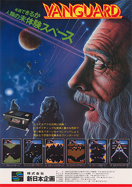

The Beginning of

SNK Corporation (株式会社SNK, Kabushiki-gaisha Esu Enu Kē) is a Japanese video game hardware
and software company. It is the successor to the company Shin Nihon Kikaku and presently owns
the SNK video game brand and the Neo Geo video game platform, and electronics. SNK's predecessor
Shin Nihon Kikaku was founded in 1978 by Eikichi Kawasaki. The corporation was initially named Shin
Nihon
Kikaku (新日本企画, lit. "New Japan Project"). In 1981, the name was informally shortened to
SNK Corporation, which became the company's official name in 1986.
SNK is known for its creation of the Neo Geo family of arcade, home, and handheld game
consoles in 1990. The Neo Geo line was halted in 2001 because financial troubles forced
SNK Corporation to close in the same year. Anticipating the end of the company, established
Playmore Corporation in 2001, which acquired all of the intellectual property of the first
iteration of SNK Corporation. In 2003, Playmore Corporation was renamed to SNK Playmore Corporation.
In 2016, SNK dropped the name Playmore from its logo and reintroduced its old slogan, "The Future Is
Now",
officially changing its corporate name back to SNK.

SNK was founded in 1973 as Shin Nihon Kikaku and reorganized in 1978
as a stock company (kabushiki gaisha) under the name "Shin Nihon Kikaku
Corporation". When Eikichi Kawasaki noticed rapid growth in the coin-operated
video game market, he expanded Shin Nihon Kikaku to include the development
and marketing of stand-alone coin-op games.

The company was nicknamed "Shin Nihon Kikaku" in katakana at first, but since 1981 it has been changed
to
"SNK"
by taking the initials from the Roman alphabet. The English copyright notation was also
"SNK CORPORATION".
It established itself in Sunnyvale, California, to deliver its own brand of coin-operated games to
arcades
in North America. SNK chose John Rowe to head its American operation.
The first two titles that SNK released were Ozma Wars (1979), a vertical space shooter, and Safari Rally
(1980),
a maze game. Game quality improved over time, most notably with Vanguard (1981), a side-scrolling space
shooter.
SNK licensed the game to Centuri for distribution in North America. Centuri started manufacturing and
distributing
the game by itself when profits exceeded projections. In part due to the success of Vanguard, SNK began
to
gain fame
and reputation. An American branch opened on October 20, 1981, named SNK Electronics Corporation.

